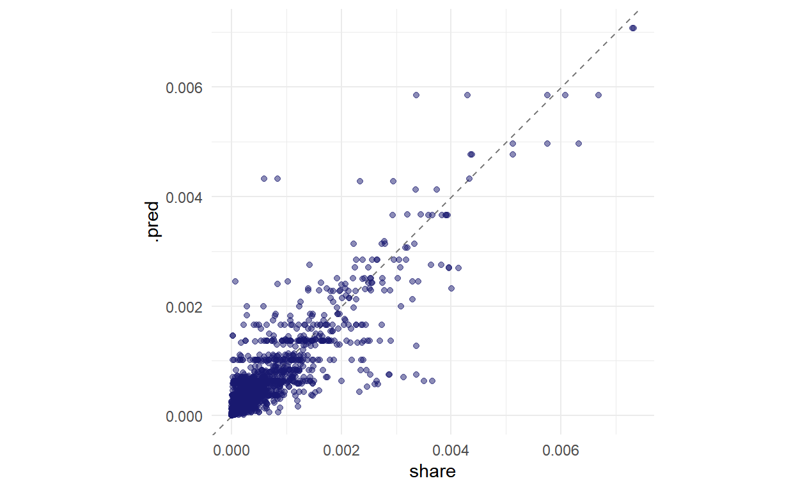
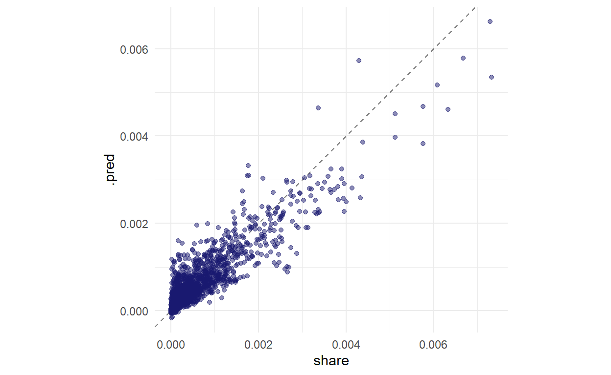
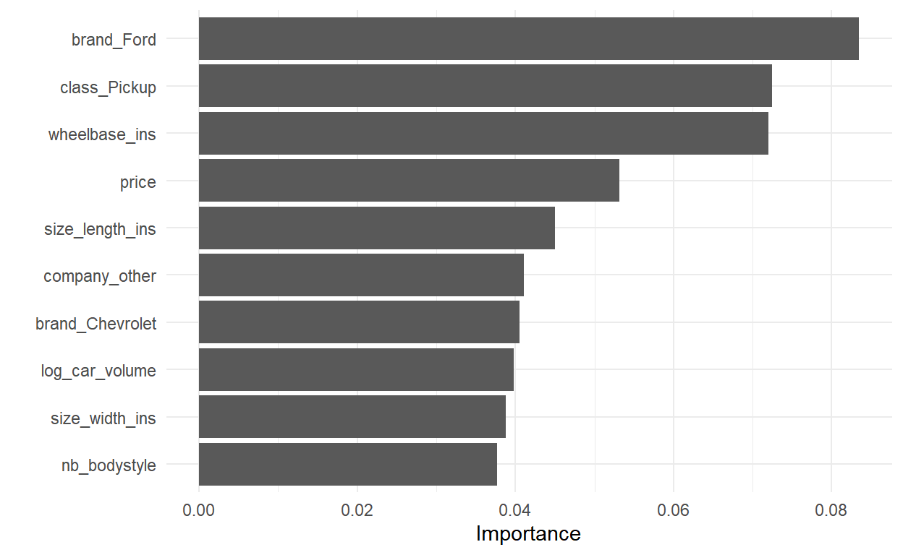
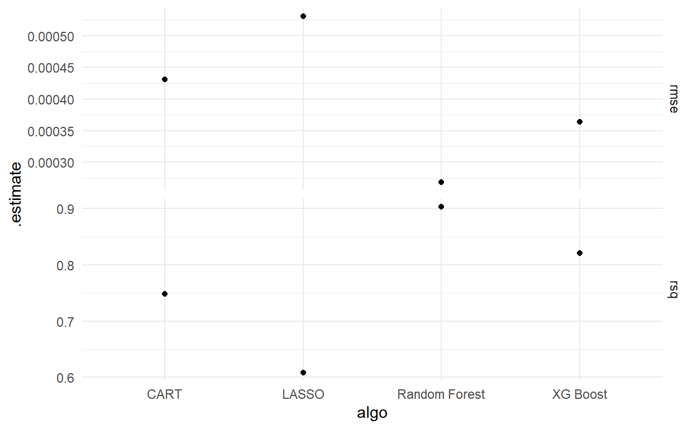

Predictive Performance
In this post, we will use four algorithmic models to predict market shares of automobiles using price, demographic characteristics, and characteristics of the vehicles. The four algorithms we will use are LASSO, CART, Random Forest, and Boosting (we use xgboost for implementation). We will tune these models using 10-fold cross-validation and a discrete grid of hyperparameters, and select the vector of hyperparameters which gives us the smallest root mean squared error (RMSE). Then we will compare the predictive accuracy of the four models to each other, and discuss the results.
We begin by loading the data:
df_raw <- haven::read_dta("Model_panel_cleaned.dta")
As a reminder, this data contains 88 variables and 6877 observations. Many of these variables are duplicates, and some variables we’d like to use (like market share) are not included in the dataset.
We clean the data by first dropping a large number of variables which are either duplicates, have zero variance, or are otherwise unnecessary. We take logs of most numeric variables in order to make the distributions more symmetric. Then we clean some problematic observations in the nationality variable. Finally, we make sure that all character vectors in the data frame are converted to factors, so that the models know how to process them.
Perhaps the most important step is calculating market share. In the style of BLP, we take the sales for each vehicle and divide it by the number of households in the United States for that year. This is based on the implicit assumption that the market size for the automobile market is all household in the US for a given year. Remember that “markets” here simply refer to a year.
Finally, we calculate a couple of price ratios to capture some notion of cross-price elasticity in the predictive process: the ratio of the price to the average price in the market, and the ratio of the price to the average price of the same class of vehicle in the market.
df<- df_raw %>%
select(-starts_with("I_"),-count_trim,-Model_id,-MY_id,
-nationality1,-nationality2,
-korea,-mexico,-netherlands,-spain,-italy,-germany,
-france,-uk,-sweden,-japan,-indian,-china,-canada,
-starts_with("income_"),-gas_nominal,-gas_real,
-car_size,-car_volume,-hp_to_cyl,-hp_to_weight,
-transmission_id,-drivetype_id,-body_original,
-model_age,-engine_hp,-mpg_combined,-dpm_combined,
-curb_weight_lbs,-trim_name,-cpi,-log_mpg_combined) %>%
mutate(log_mpg_city=log(mpg_city)) %>%
mutate(log_mpg_hwy=log(mpg_hwy)) %>%
mutate(log_dpm_city=log(dpm_city)) %>%
mutate(log_dpm_hwy=log(dpm_hwy)) %>%
mutate(nationality=case_when(nationality%in%
c("Italy/US","Germany/US") ~ "US",
nationality == "" ~ "US",
TRUE ~ nationality)) %>%
select(-c(mpg_city,mpg_hwy,dpm_city,dpm_hwy)) %>%
mutate_if(is.character,as.factor) %>%
mutate(share=sales/(nb_hh*1000)) %>%
group_by(Year) %>%
mutate(own_mkt_price_ratio=price/((sum(price)-price)/(n()-1))) %>%
group_by(class) %>%
mutate(own_class_price_ratio=price/((sum(price)-price)/(n()-1))) %>%
ungroup %>%
select(-sales,-nb_hh) %>%
drop_na()
df<- as.data.frame(df)
Now we need to split the data into training and test samples, along with creating some cross-validation folds within the training set. Before we do so, let’s have a brief look at the distribution of market shares in the data:
df %>% ggplot(aes(x=share)) + geom_histogram(alpha=0.8) + xlab("Market Share")
The distribution of market shares is heavily right-skewed, which can present a problem when splitting the data. We don’t want all of the high market share observations to end up in either the training or the test set. Thus, we employ stratified sampling with respect to the market share. This means that we first split up the data by market share quartiles, and sample separately from each of these quartiles. This preserves the distribution of market shares between the training and test samples.
set.seed(123)
df_split <- initial_split(df, strata = share)
df_train <- training(df_split)
df_test <- testing(df_split)
df_folds <- vfold_cv(df_train, strata = share)
In the tidymodels framework, the basis for the model is a recipe: a set of instructions that tell the algorithm what type of \(y=f(x)\) formula it is modeling, and any final preprocessing that needs to occur. In our case, we want our \(y\), or outcome, to be market share, and our \(x\), or predictors, to be all of the remaining variables. We choose to exclude “year” from this list as its function in the data is simply to denote which market an observation is in.
There is one major issue with the data in its current form: the total number of levels for all the categorical variables (model, company, nationality, etc.) is almost 800! That translates to almost 800 extra dummy variables when fitting the models. To avoid this explosion in the number of variables, we use the “step_other” function to collapse all the factor levels below a certain threshold. This threshold was chosen by us, the modelers, and the thresholds result in the total number of variables being only slightly greater than 100.
demand_recipe<- recipe(formula= share ~., data=df_train) %>%
update_role(Year, new_role="Market") %>%
step_other(company,threshold=0.05) %>%
step_other(brand,nationality,suv_class,threshold=0.02) %>%
step_other(model,threshold=0.0045) %>%
step_dummy(all_nominal())
LASSO is a regularized linear regression model, and essentially functions as a means to accomplish variable selection algorithmically. In order to do this, a penalty is imposed, and that penalty is the hyperparameter we need to tune.
In order for this penalty to make sense, we have to normalize all of the predictors. Otherwise, the penalty we be applied differently depending on the scale and location of that predictor’s distribution.
glmnet_recipe <-
demand_recipe %>%
step_normalize(all_predictors(), -all_nominal())
glmnet_spec <-
linear_reg(penalty = tune(), mixture = 1) %>%
set_mode("regression") %>%
set_engine("glmnet")
glmnet_workflow <-
workflow() %>%
add_recipe(glmnet_recipe) %>%
add_model(glmnet_spec)
We tune the model using 10-fold cross-validation, and select the best model based on RMSE. Then we fit this model one last time to the training set.
set.seed(63663)
glmnet_tune <-
tune_grid(glmnet_workflow,
resamples = df_folds,
grid = 10)
show_best(glmnet_tune, metric = "rmse")
#Best model is penalty = 2.037462e-10
final_glmnet <-
glmnet_workflow %>%
finalize_workflow(select_best(glmnet_tune, metric = "rmse"))
glmnet_fit <- last_fit(final_glmnet, df_split)
The above table shows the RMSE results for the top five models. We can see that the RMSE is increasing in the penalty hyperparameter, meaning that a lower penalty is superior. This corresponds to less regularization, and thus more non-zero coefficients in the regression.
Finally, we run the tuned model on the test set and plot the resulting market share predictions in comparison to the actual values.
glmnet_plot <- #Plot of predictions vs truth
collect_predictions(glmnet_fit) %>%
ggplot(aes(share, .pred)) +
geom_abline(lty = 2, color = "gray50") +
geom_point(alpha = 0.5, color = "midnightblue") +
coord_fixed()
glmnet_plot
The plot above shows an adequate performance for this model. Errors are still sizable, and there even appears to be somewhat of a downward bias to the model. Predictions tend to be worse for the rarer, larger market shares.
Now we examine variable importance in this model. What are the features that LASSO selects as most important for predicting automobile market share?
glmnet_vip <-
glmnet_fit %>%
pluck(".workflow", 1) %>%
pull_workflow_fit() %>%
vip::vip(num_features = 10)
glmnet_vip
Somewhat surprisingly, the own/class price ratio appears as the most important, followed by price. This suggests that the price relationship between a car model and its competitors inside the same class of vehicle significantly contributes to its market share.
In addition, we see some of the introduced dummy variables emerge as important, particular Ford and specifically its F-series pickup trucks. These trucks have unusually high market shares, so perhaps their shares are not able to be predicted just by their characteristics.
The next model we will use is a regression tree. The regression tree uses a greedy algorithm to perform recursive splits on the data. If allowed to grow large, these learners can have quite high variance and risk over-fitting. Thus, we use three tuning parameters to “prune” the tree: a complexity cost, a maximum tree depth, and a minimum number of observations per split.
cart_recipe <-
demand_recipe
cart_spec <-
decision_tree(cost_complexity = tune(), tree_depth=tune(), min_n = tune()) %>%
set_mode("regression") %>%
set_engine("rpart")
cart_workflow <-
workflow() %>%
add_recipe(cart_recipe) %>%
add_model(cart_spec)
We tune the model using a discrete grid, and then fit the best model to the training data.
set.seed(63663)
cart_tune <-
tune_grid(cart_workflow,
resamples = df_folds,
grid = 30,
control = control_grid(verbose = TRUE))
show_best(cart_tune, metric = "rmse")
#Best model is cost_complexity = 2.022630e-09, tree_depth = 12, min_n = 12
final_cart <- cart_workflow %>%
finalize_workflow(select_best(cart_tune, metric = "rmse")) %>% fit(df_train)
cart_fit <- last_fit(final_cart, df_split)
Below we show the results for the top 5 models.
We can see that the RMSE decreases as complexity cost decreases, minimum number of observations per node decreases, and tree depth decreases (slightly).
Let’s examine the tuned model’s predictive accuracy on the test set. Below we plot the predicted vs. actual market shares.
cart_plot <- #Plot of predictions vs truth
collect_predictions(cart_fit) %>%
ggplot(aes(share, .pred)) +
geom_abline(lty = 2, color = "gray50") +
geom_point(alpha = 0.5, color = "midnightblue") +
coord_fixed()
cart_plot

The horizontal lines of predictions demonstrate the discretizing effect that CART tends to have on the outcome space. However, the model appears to have a decent fit, albeit with fairly high variance.
Here is the variable importance plot for CART:
cart_vip <-
cart_fit %>%
pluck(".workflow", 1) %>%
pull_workflow_fit() %>%
vip::vip(num_features = 10)
cart_vip
We see some similarities with LASSO, like the presence of the F-series dummy again and the prominence of price, but some variables are reordered and others are new altogether. Note that variables related to car size and volume seem to take a more prominent role here.
Decision trees generally come with an added benefit of interpretability, so let’s take a closer look at the model itself:
rpart.plot(final_cart$fit$fit$fit)
This is quite a large tree, and a bit difficult to interpret. We may be able to faintly make out that the first split is along the F-series dummy, and further early splits pertain to price and price ratios, but much more than that becomes quite complex. Perhaps the interpretability advantage of a single tree is not so significant in our case.
With this relative lack of interpretability in mind, we will take it a few steps further by fitting a random forest to our data. Here we will tune just a couple of parameters: mtry, which is the number of variables considered at each split point, and min_n, which is the minimum number of observations per split. We don’t tune the number of trees; instead, we select the sufficiently large number of 500.
rf_recipe <-
demand_recipe
rf_spec <-
rand_forest(mtry = tune(), min_n = tune(), trees = 500) %>%
set_mode("regression") %>%
set_engine("ranger")
rf_workflow <-
workflow() %>%
add_recipe(rf_recipe) %>%
add_model(rf_spec)
We will now tune the model using 10-fold cross-validation.
set.seed(63663)
rf_tune <- tune_grid(rf_workflow,
resamples = df_folds,
grid = 20)
show_best(rf_tune, metric = "rmse")
#Best model is mtry = 10, min_n = 4
final_rf <- rf_workflow %>%
finalize_workflow(select_best(rf_tune, metric = "rmse"))
rf_fit <- last_fit(final_rf, df_split)
This time-consuming process produces the above results for the top five models. We see overall better results with a smaller number of variables considered at each split, and a smaller number of observations per split - deeper trees.
Finally, we run the best model on the test set and plot the predictions vs. the actual market shares.
rf_plot <- #Plot of predictions vs truth
collect_predictions(rf_fit) %>%
ggplot(aes(share, .pred)) +
geom_abline(lty = 2, color = "gray50") +
geom_point(alpha = 0.5, color = "midnightblue") +
coord_fixed()
rf_plot
These are quite stunning results, compared to the previous models. The random forest demonstrates quite low bias and low variance.
Let’s have a look at what variables are producing this impressive predictive accuracy by plotting the variable importances:
rf_prep<- prep(rf_recipe)
rf_final<- final_rf %>% pull_workflow_spec()
rf_vip<- rf_final %>%
set_engine("ranger", importance="permutation") %>%
fit(share ~ ., data=juice(rf_prep) %>% select(-Year)) %>%
vip()
rf_vip
We see many of the same variables as before, with some exceptions. Note the extremely high importance of “company_other”: this variable differentiates models produced by the largest automobile companies from those produced by one of the many smaller companies. It is fairly easy to see why this variable might thus be useful for predicting market share.
Also note the introduction of the “nb_bodystyle” variable, which counts the number of different classes are accounted for in the various trims of a model. If a model has more than one bodystyle represented among its trims, that model is typically a fairly important model for that brand. In other words, the brand has invested considerably in developing variations on that particular model. Thus, it is sensible that this variable would be predictive of market share.
The final algorithm we will try is a boosted tree, implemented using the xgboost algorithm. Boosting, as opposed to random forest, involves quite a bit of tuning: here, we tune six parameters as listed in the code below.
xgb_recipe <-
demand_recipe
xgb_spec <-
boost_tree(trees = tune(), min_n = tune(), tree_depth = tune(), learn_rate = tune(),
loss_reduction = tune(), sample_size = tune()) %>%
set_mode("regression") %>%
set_engine("xgboost")
xgb_workflow <-
workflow() %>%
add_recipe(xgb_recipe) %>%
add_model(xgb_spec)
We tune them using a discrete grid, and examine the results of the top five models.
set.seed(82993)
xgb_tune <- tune_grid(xgb_workflow, resamples = df_folds, grid = 60)
show_best(xgb_tune, metric = "rmse")
final_xgb <- xgb_workflow %>%
finalize_workflow(select_best(xgb_tune, metric = "rmse"))
xgb_fit <- last_fit(final_xgb, df_split)
There is actually quite significant variability in the performance of these models. We see that the best model involves a quite large number of trees, a fairly large minimum number of observations with a moderate tree depth, low learning rate, moderate loss reduction, and large sample size. It’s a bit difficult to interpret any patterns from these hyperparameters since there are so many of them, but we can at least note the large min_n compared to CART and random forest, suggesting a shallower tree. This is what we’d expect from a boosting algorithm.
Finally, we run the model on the test set and plot its predictive accuracy:
xgb_plot <- #Plot of predictions vs truth
collect_predictions(xgb_fit) %>%
ggplot(aes(share, .pred)) +
geom_abline(lty = 2, color = "gray50") +
geom_point(alpha = 0.5, color = "midnightblue") +
coord_fixed()
xgb_plot

Boosting performs reasonably well - though it is not quite at the level of the random forest. The variance appears to be a bit higher than random forest, while the bias is comparable. Boosting does, however, perform better than both LASSO and CART.
We now plot the variable importances for the boosted model.
xgb_vip <-
xgb_fit %>%
pluck(".workflow", 1) %>%
pull_workflow_fit() %>%
vip::vip(num_features = 10)
xgb_vip

Again we see somewhat similar results, with Ford, price, and car volume making their usual appearances. We do see the introduction of a couple of new variables, like the pickup truck class and the model age, but overall the results are not extremely different from the other models.
We’ve now fit and tested four different algorithmic models to predict the market shares of automobiles in the United States. Let’s review their overall performances and compare:
metrics_df <-
bind_rows(collect_metrics(glmnet_fit) %>% mutate(algo = "LASSO"),
collect_metrics(cart_fit) %>% mutate(algo = "CART"),
collect_metrics(rf_fit) %>% mutate(algo = "Random Forest"),
collect_metrics(xgb_fit) %>% mutate(algo = "XG Boost"),
)
metrics_plot <-
metrics_df %>%
ggplot(aes(algo,.estimate)) +
geom_point() +
facet_grid(.metric ~ ., scales = "free_y")
metrics_plot

Clearly, boosting and random forest dominate LASSO and CART in both RMSE and R-squared. We see exceptional performance from random forest, which boasts an R-squared of greater than 0.9. The RMSE for these top two models is about an order of magnitude lower than the average market share. Thus, the predictive portion of this project has been quite successful: we have proven it is possible to use algorithmic models to accurately predict market shares from price, characteristics, and demographic data.
What we have seen in terms of interpretability has been less impressive. Variable importance plots give us some insight into the black boxes of these models, and we’ve learned that certain variables seem to appear again and again: price, Ford, F-series, company dummies. But though price appears in these plots, we don’t have a notion of its effect size, or what the demand elasticity is for these vehicles. Even CART, with its relative ease of interpretability, was hardly readable due to its complexity. Thus, in order to examine inferential questions about demand estimation we will need to try out some different algorithmic techniques in our coming posts, like causal random forests or double machine learning.